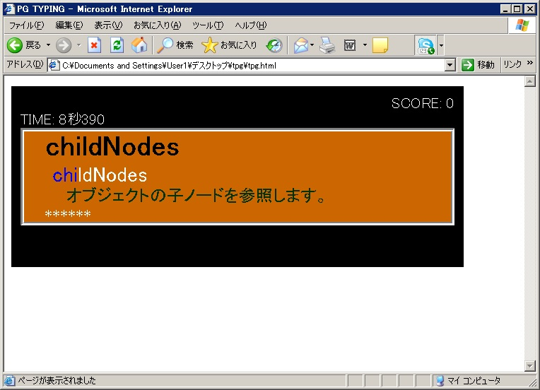
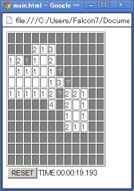
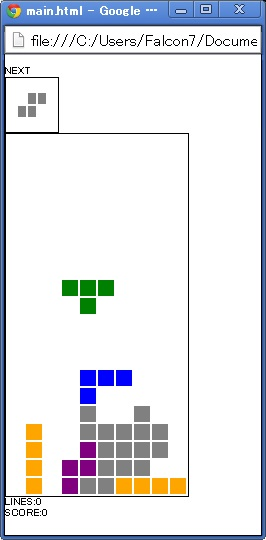
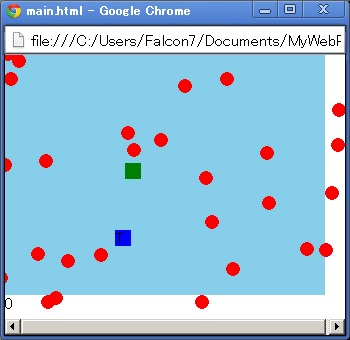

昔作ったJavasscriptによる、ヒマつぶしレベルの自作ゲームがおいてあります。
もともとInternetExproler6で動作すること、ゲームプログラムのサンプル作りを前提に考えており、
グラフィック・デザインには気を使っておりませんキリﾂ。
また、ここにおいてあるスクリプトは、ライセンスフリーになっております。
(ゲーム性を表現するのにグラフィックは重要ではないということを証明したい)
※ PC用の為、スマフォでは基本的に動作しません。
一部のゲームは３ＤＳでも遊べます。(３ＤＳ版用意しました。)

IE6で動作することを考えており、基本的にシンプルなレイアウトになっております。
ミスタイプした場合、画面が赤くなりますので、音がでないブラウザ環境でも一応ゲームとして楽しめます。
JavaScriptとAjaxの勉強を兼ねて、なんとなく作ってみた。
プレイする
遊びたかったら、パソコンからアクセスしてね。

有名な爆弾探しのプログラムを再現してみた。
(Chromeで動作可、FireFox非対応？、IE6動作可) 以前はFirefoxで動いたはずなのになぁ…
ＰＣでプレイする
３ＤＳでプレイする
遊びたかったら、パソコンからアクセスしてね。

世界で一番有名な落ち物ゲーム
プチコン版とほとんど同じロジックで作ってます。
左上の"START"の文字をクリックするとゲーム開始
十字キーで移動、スペースで回転
IE6で快適動作させるために、必要最低限の色やデザインとなっております。
ChromeとFireFoxで比べてみると、動作速度の違いから、以下にChromeが優秀なブラウザががわかります。(ChromeのJavaScript早すぎぃ)
3DSのJavascriptは非常に遅いため、ゲームになりませんでした。
ＰＣでプレイする
３ＤＳでプレイする
遊びたかったら、パソコンからアクセスしてね。

大量の弾幕を交わしつつ、アイテムを回収するゲーム。
十字キーで移動、緑が自機、青いターゲットに触れると得点
プレイする
遊びたかったら、パソコンからアクセスしてね。